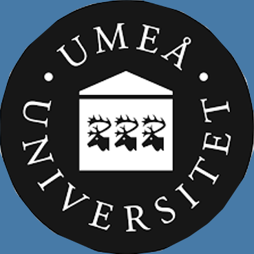

Monowar Bhuyan
Assistant Professor of Computing Science, Umeå University


Monowar Bhuyan is a WASP Assistant Professor
(biträdande universitetslektor) in the Department of Computing Science, Umeå University, Sweden since
January 2020 and one of the research group leaders in Autonomous Distributed Systems Lab led by Prof. Erik Elmroth. Before this, he was
a Visiting Researcher in the Laboratory for Cyber
Resilience led by Prof. Youki
Kadobayashi at NAIST, Japan from April to December 2019 funded by NICT, Japan. Monowar hold
postdoc-cum-researcher position in the Department of Computing Science, Umeå University, Sweden from
September 2017 to December 2019. Monowar worked as Associate Professor (Senior Lecturer) in the
Department of Computer Science and Engineering at Assam Kaziranga University, Jorhat, India from November 2016 to September 2019.
Before that, he served as Assistant Professor (Lecturer) in the same Department from July 2013 to
October 2016. He worked as a Researcher in the Department of Computer Science and Engineering, Tezpur
University, India from January 2009 to June 2013. His primarily research interest includes machine
learning, anomaly detection, security and privacy, trustworthy AI, and distributed systems.
Monowar Bhuyan was born and brought up at Goalpara, Assam (North-eastern Region of India). Later, he moved to Tezpur on August 2007 where he obtained his M.Tech. and Ph.D. in Computer Science and Engineering with specialization in machine learning and computer security from the Department of Computer Science and Engineering at Tezpur University (a Central University), Assam, India in 2009 and 2014, respectively. He was advised by Prof. Dhruba Kr. Bhattacharyya, Tezpur University (a Central University), Tezpur, India and Prof. Jugal Kr. Kalita, University of Colorado at Colorado Springs, USA. He obtained B.E. in Computer Science and Engineering from The Institution of Electronics and Telecommunication Engineers (IETE), New Delhi. During his Ph.D., he received Senior Research Fellowship award from Council of Scientific and Industrial Research (CSIR), Government of India.
Monowar has published several articles in reputed international conferences and journals and written a book on network traffic anomaly detection and prevention with Springer International, Germany. Monowar received best paper award in ACM ICACCI 2012 for his contributions. He bagged best faculty award at Assam Kaziranga University in 2016. He was also awarded a fellowship for attending the IETF 98 physical meeting held on March 26-31, 2017 at Chicago, Illinois, USA, which was approved by Ministry of Electronics and Information Technology (MeitY), Government of India.
Monowar Bhuyan was born and brought up at Goalpara, Assam (North-eastern Region of India). Later, he moved to Tezpur on August 2007 where he obtained his M.Tech. and Ph.D. in Computer Science and Engineering with specialization in machine learning and computer security from the Department of Computer Science and Engineering at Tezpur University (a Central University), Assam, India in 2009 and 2014, respectively. He was advised by Prof. Dhruba Kr. Bhattacharyya, Tezpur University (a Central University), Tezpur, India and Prof. Jugal Kr. Kalita, University of Colorado at Colorado Springs, USA. He obtained B.E. in Computer Science and Engineering from The Institution of Electronics and Telecommunication Engineers (IETE), New Delhi. During his Ph.D., he received Senior Research Fellowship award from Council of Scientific and Industrial Research (CSIR), Government of India.
Monowar has published several articles in reputed international conferences and journals and written a book on network traffic anomaly detection and prevention with Springer International, Germany. Monowar received best paper award in ACM ICACCI 2012 for his contributions. He bagged best faculty award at Assam Kaziranga University in 2016. He was also awarded a fellowship for attending the IETF 98 physical meeting held on March 26-31, 2017 at Chicago, Illinois, USA, which was approved by Ministry of Electronics and Information Technology (MeitY), Government of India.
Recent News
- 3/2023 - Currently looking for a PhD student in serverless edge intelligence at Umeå University, Sweden (Deadline: April 10, 2023).
- 1/2023 - Congratulations! Tobias - a paper accepted in IEEE/ACM CCGRID, May 1-4, 2023, Bengaluru, India.
- 11/2022 - Currently looking for a PhD student in representation learning with Professor Virginia Dignum at Umeå University, Sweden (Deadline: December 20, 2022).
- 7/2022 - Currently looking for a postdoc in federated learning at Umeå University, Sweden (Deadline: July 30, 2022).
- 2/2022 - Looking for candidates for 15 positions and fellowships within the ADS Lab at Umeå University, Sweden (you can see more details in the link).
- 12/2021 - - Hiring - attractive six postdocs in distributed systems at Umeå University, Sweden (Deadline for application - February 13, 2022).
- 11/2021 - Congratulations! Tobias - a paper accepted in IEEE COMSNETS, Jan 3-8, 2022, Hybrid Mode, Bengaluru, India.
- 10/2021 - Congratulations! Tobias - a paper accepted in IEEE CCNC, Jan 8-11, 2022, Virtual.
- 9/2021 - Congratulations! Sourasekhar - a paper accepted in ICONIP, Dec 8-12, 2021, Bali, Indonesia.
you are a student interested in working with me, read this first.